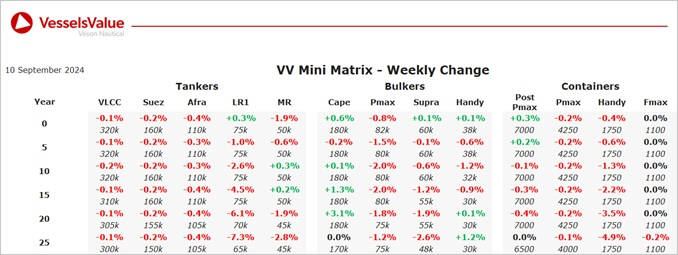

Bulkers:S&P values have remaining stable with older panamax and supramax downwards slightly dueto sales such as Nord Penguin and Jag Rani
Capesize BC Azure Ocean (180,200 DWT, Jan 2007, Imabari) sold to Undisclosed buyers for USD 25 mil, VV Value USD 23.7 mil
Capesize BC Star Triumph (176,300 DWT, Jan 2004, Universal) sold DD Due to Undisclosed buyers for USD 20 mil, VV Value USD 18.4 mil
Kamsarmax BC Nord Penguin (81,800 DWT, Jan 2015, Oshima) sold to Undisclosed buyers for USD 30 mil, VV Value USD 30.7 mil
Supramax BC Jag Rani (56,700 DWT, Jul 2011, COSCO Zhoushan) sold to Undisclosed buyers for USD 14 mil, VV Value USD 15.6 mil
Handy BC African Egret (34,000 DWT, Sep 2016, Namura) sold to Undisclosed buyers for USD 21.5 mil, VV Value USD 21.7 mil
Tankers:LR1 values softened across all ages last week with older tonnage experiencing the largest decrease owing to the sale of Two Million Ways
LR1 Two Million Ways (74,000 DWT, Feb 2008, Onomichi Dockyard) sold to Unknown Indian buyers for USD 30 mil, VV Value USD 31.42 mil
MR2 (Chem/Prod) STI Texas City and STI Antonio (50,000 DWT, Mar-May 2014, SPP) sold to undisclosed buyers for USD 85 mil (SS/DD Passed), VV Value USD 82.76 mil
MR2 (Chem/Prod) STI Opera (50,000 DWT, Jan 2014, Hyundai Mipo) sold SS/DD Passed to undisclosed buyers for USD 41 mil, VV Value USD 40.54 mil
MR2 Pioneer (49,000 DWT, Jan 2005, Daewoo) sold SS/DD Due to undisclosed buyers for USD 19 mil, VV Value USD 19.54 mil
Containers:Container values mostly remain stable this week, with gains restricted to large older
Sub-Panamax Buxfavourite (2,432 TEU, 1997, Daewoo) sold to Chinese interests for USD 10.8 mil, VV Value USD 11.9 mil
Handysize AS Fatima (1,296 TEU, 2008, Zhejiang Ouhua) sold to undisclosed buyers for USD 11.9 mil, VV Value USD 12.1 mil
